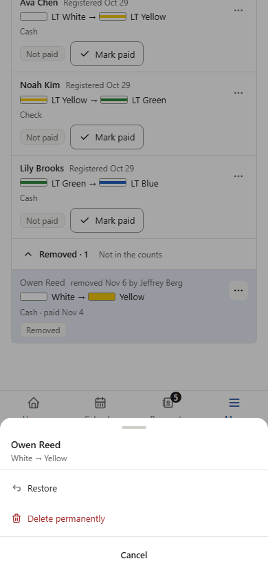
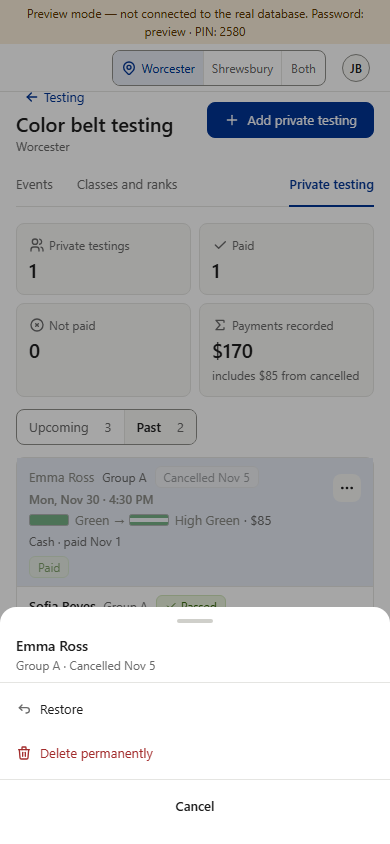
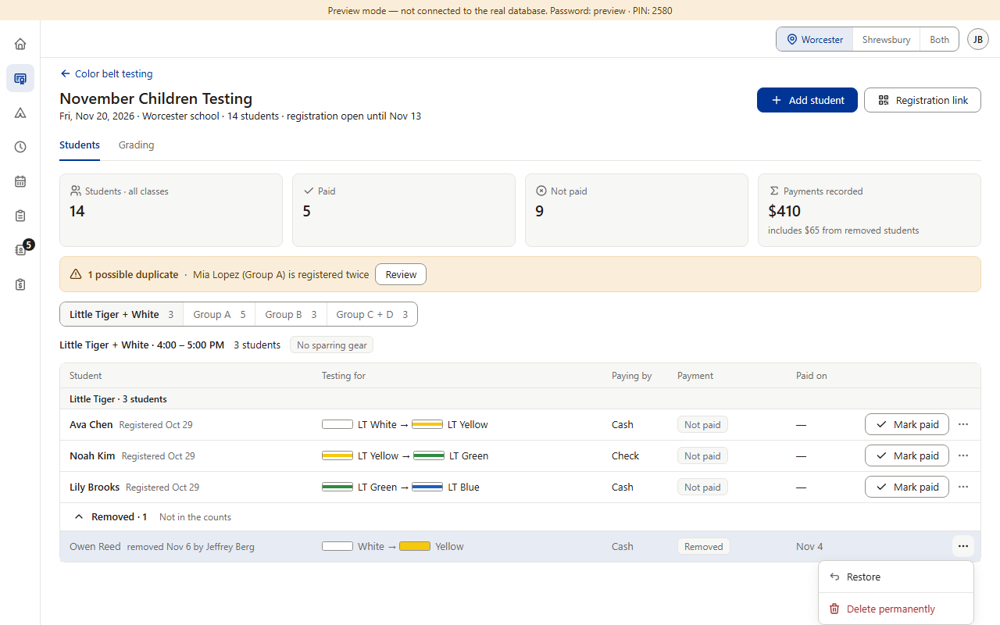
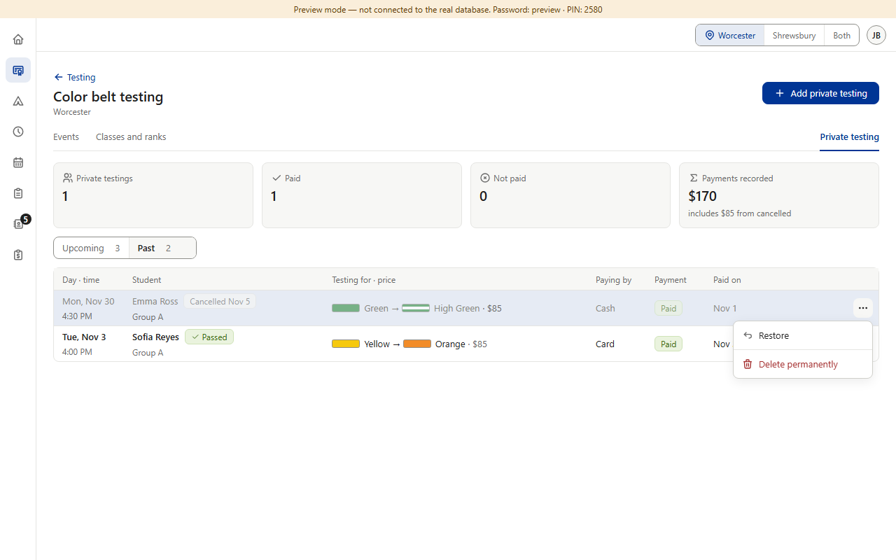
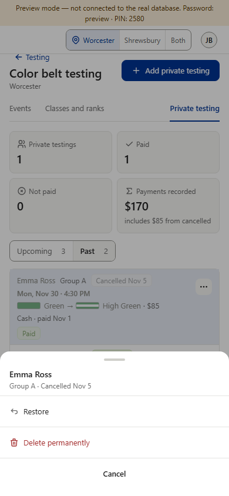

Today


After




Rulebook v1.055 (f) (you approved A: “Approve all”). On a removed student's ⋯ and a cancelled private testing's ⋯, Restore sits above a line and the red Delete permanently below it, as Star and Camps already do, so the harmless and the permanent action aren't side by side. Only the line is new; nothing else in the menus changes. The menu's own separator (the shared ⋯ menu's line) is used. Shown at 1280 and 390, as the fix file asks; the tablet looks like PC and 320 like 390. The After column is drawn on top of the real preview page.




